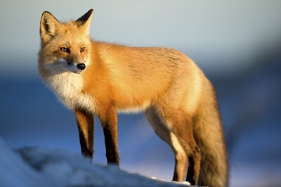
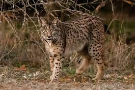
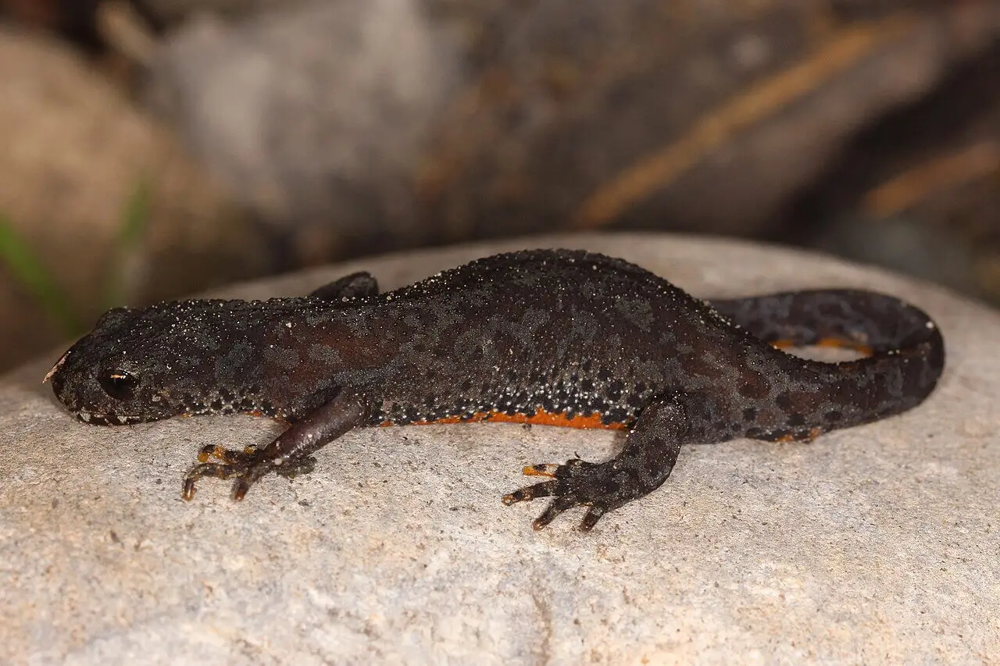
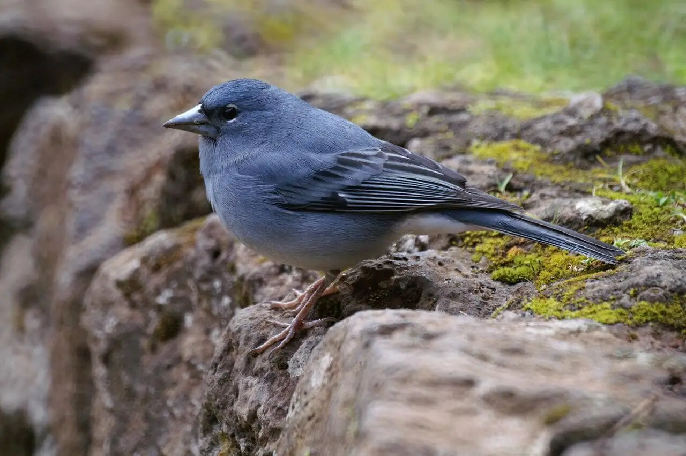

La faune de l'Espagne change selon la zone géographique. Dans la péninsule ibérique, vous pouvez trouver des mammifères tels que le renard roux, le lynx ibérique, le chat sauvage, le cerf, la chèvre ibérique, le lièvre ibérique, la chauve-souris, le loup ibérique, le vison et l'écureuil. De plus, des amphibiens tels que le triton ibérique, le crapaud accoucheur ibérique et la grenouille y habitent ; des reptiles comme la tortue méditerranéenne, le caméléon, le lézard et diverses espèces de lézards et de serpents. Parmi les oiseaux les plus remarquables de la péninsule figurent l'aigle impérial ibérique, le vautour noir, le merle, le moineau et la pie. Les cours d'eau salée et douce d'Espagne abritent des poissons tels que des lamproies, des esturgeons, des aloses, des anguilles, des vermillons, des barbillons, des calandines, des défenses, des capucines et des bars. De plus, sur ses côtes se trouvent un grand nombre d'animaux marins comme des dauphins, des baleines, des méduses et des cachalots. Aux îles Canaries, de nombreuses espèces endémiques ont disparu et aujourd'hui la plupart des espèces qui y vivent ont été introduites. Certains animaux indigènes de ces îles sont des oiseaux, comme le pinson bleu de Tenerife, le pouillot des Canaries et le chaton des Canaries
|  |  |  |  |
|---|---|---|---|
| Renard roux | Lynx iberique | triton iberique | pinson bleu |